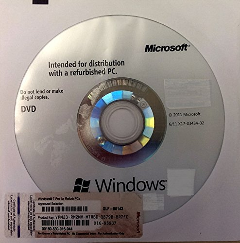

Estado actual del despliegue de sistemas de software
El objetivo de esta unidad es responder las siguientes preguntas:
- Qué significa "despliegue de sistemas de software"?
- Porqué es importante para un sistema desplegable?
- Porqué es tan crucial su automatización?
Diagnóstico
Podemos iniciar el análisis del estado actual del desarrollo de software con unas preguntas iniciales:
Cuál es el valor de un sistema de software que no está disponible a los usuarios finales?
Seguramente nos hemos encontrado con esta pregunta muchas veces, probablemente habremos trabajado en un sistema por semanas, meses o años. Todo nuestro esfuerzo esta orientado a que los usuarios finales del sistema encuentren utilidad en el trabajo que estamos desarrollando, pero tal utilidad no es visible hasta que ellos puedan realmente usarlo, ya sea a través de una aplicación de escritorio, a través de la web en un navegador, o como aplicación en sus dispositivos móviles.
Qué tan importante es el despliegue del sistema en el proceso de desarrollo de software?
La mayoría de los ambientes y procesos de desarrollo se enfocan más en en análisis, diseño y desarrollo de sistemas, dejando de lado su despliegue hasta etapas posteriores (Coplien, 2015).
Qué tanto ha evolucionado el despliegue de sistemas?

El área de despliegue de sistemas ha cambiado drásticamente en la última década, en años previos los despliegues incluían la producción y distribución de productos físicos como CD-ROM o DVD, con espacios de versionamiento largos, que podían ser cada N meses o incluso años. En tiempos más recientes la distribución de sistemas es frecuente y continua, podemos tomar como ejemplo las aplicaciones móviles, que tienen en promedio una docena de actualizaciónes semanales (Corden, 2019).
Que sucede con los sistemas cuando ya están desarrollados y verificados?
El escenario ideal del desarrollo clásico de sistemas es el de entregar sistemas completamente desarrollados, verificados y listos para su uso. Pero la realidad es muy diferente, 85% de los sistemas desarrollados tienen errores graves que deben ser corregidos, y muchos otros errores se llevan a producción y reparados sobre la marcha debido a la falta de tiempo (Coplien, 2015). La retroalimentación temprana es importante, pero los métodos de desarrollo actuales exigen un proceso constante de retroalimentación, está en nosotros como parte de los equipos de trabajo el facilitar esta retroalimentación tan necesaria para incrementar la calidad de los sistemas.
Cómo manejamos la retroalimentación de los usuarios finales?
La respuesta corta es que no lo hacemos. La retroalimentación debe ser parte del proceso de desarrollo, y no un post-paso del mismo. La retroalimentación temprana funciona como un tipo de bala trazadora, nos permite identificar el objetivo en movimiento y corregir la dirección. Este tipo de información es vital para el desarrollo de sistemas, nos permite guíar los esfuerzos hacia una dirección común, y corregir las desviaciones de forma temprana. Este objetivo solamente se puede lograr con una retroalimentación constante y una mejora constante de los sistemas en tiempo desarrollo.
Cómo creamos valor de la retroalimentación?
Valor en un sistema puede tomarse desde diferentes puntos de vista, depende también del criterio de valor de cada organización, pero podemos listar unos cuantos aspectos que pueden valorizar más un sistema:
- Reducción de bugs
- Incremento de accesibilidad
- Reducción de uso de recursos
- Incremento en el rendimiento de tareas/procesos
- Eliminación de funcionalidad errónea o poco usada
Todos estos aspectos generan valor en un sistema, ya sea un valor directo subjetivo, como el grado de satisfacción de los usuarios finales para con el sistema. O la mejora con métricas objetivas, como la reducción del costo de soporte y mantenimiento en un sistema que se ha estabilizado debido al constante flujo de retroalimentación y corrección.
Referencias
- James Coplien and Gertrud Bjornvig. Lean Architecture. Wiley, 2015.
- Elliot Corden. Google Summer Report, 2019.